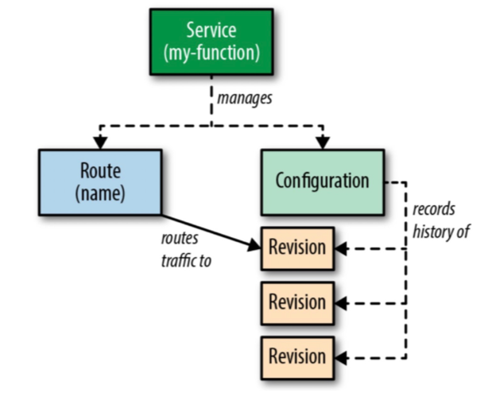

前边说过Knative是基于K8s部署的，使用k8s的容器管理功能以及istio的网络管理功能，下边一起看一下Knative的流量是怎么转发的吧。
一、Knative资源介绍
Knative资源
knative主要分为三个组件，build、server、event，分别处理CI/CD,服务伸缩，事件驱动。
流量转发主要由server这部分处理。
- knative service
- knative ingress
- knative serverlessService
- knative route
- knative configuration
- kantive revision
istio资源
- Gateway
- virtualService。
二、流量转发
官方架构
先回顾一下Knative官方的一个简单的原理示意图如下所示。用户创建一个Knative Service（ksvc）后，Knative会自动创建Route（route）、Configuration（cfg）资源，然后cfg会创建对应的Revision（rev）版本。rev实际上又会创建Deployment提供服务，流量最终会根据route的配置，导入到相应的rev中。

老版本（0.6）
在集成使用Istio部署时，Route默认采用的是Istio Ingress Gateway实现，大概在Knative 0.6版本之前，我们可以发现，Route的流量转发本质上是由Istio virtualservice（vs）控制。副本数为0时，其中destination指向的是Activator组件。此时Activator会帮助转发冷启动时的请求。
1 | apiVersion: networking.istio.io/v1alpha3 |
当服务启动后，修改vs将destination指向对应服务实例上。
1 | apiVersion: networking.istio.io/v1alpha3 |
新版本
我们创建一个简单的hello-go ksvc，并以此进行分析。ksvc如下所示：
1 | apiVersion: serving.knative.dev/v1alpha1 |
virtualservice的变化
环境是一个标准的Istio部署，Serverless网关为Istio Ingress Gateway，所以创建完ksvc后，为了验证服务是否可以正常运行，需要发送http请求至网关。Gateway资源已经在部署Knative的时候创建，这里我们只需要关心vs。在服务副本数为0的时候，Knative控制器创建的vs关键配置如下：
1 | spec: |
vs指定了已经创建好的gw，同时destination指向的是一个Service域名。这个Service就是Knative默认自动创建的hello-go服务的Service。
可以发现vs的ownerReferences指向了一个Knative的CRD ingress.networking.internal.knative.dev：
1 | ownerReferences: |
根据名字可以看到这是一个Knative内部使用的CRD，该CRD的内容其实和vs比较类似，同时ingress.networking.internal.knative.dev的ownerReferences指向了我们熟悉的route，总结下来就是：
route -> kingress(ingress.networking.internal.knative.dev) -> vs
在网关这一层涉及到的CRD资源就是如上这些。这里kingress的意义在于增加一层抽象，如果我们使用的是其他网关，则会将kingress转换成相应的网关资源配置。最新的版本中，负责kingress到Istio vs的控制器部分代码已经独立出一个项目，可见如今的Knative对Istio已经不是强依赖。
现在，我们已经了解到Serverless网关是由Knative控制器最终生成的vs生效到Istio Ingress Gateway上，为了验证我们刚才部署的服务是否可以正常的运行，简单的用curl命令试验一下。
和所有的网关或者负载均衡器一样，对于7层http访问，我们需要在Header里加域名Host，用于流量转发到具体的服务。在上面的vs中已经可以看到对外域名和内部Service域名均已经配置。所以，只需要：
1 | curl -v -H'Host:hello-go.faas.example.com' <IngressIP>:<Port> |
其中，IngressIP即网关实例对外暴露的IP。
对于冷启动来说，目前的Knative需要等十几秒，即会收到请求。根据之前老版本的经验，这个时候vs会被更新，destination指向hello-go的Service。
不过，现在我们实际发现，vs没有任何变化，仍然指向了服务的Service。对比老版本中服务副本数为0时，其实vs的destination指向的是Activator组件的。但现在，不管服务副本数如何变化，vs一直不变。
蹊跷只能从destination的Service域名入手。
revision service探索
创建ksvc后，Knative会帮我们自动创建Service如下所示。
1 | $ kubectl -n faas get svc |
hello-go Service是一个ExternalName Service，作用是将hello-go的Service域名增加一个dns CNAME别名记录，指向网关的Service域名。
根据Service的annotation我们可以发现，Knative对hello-go-fpmln、hello-go-fpmln-m9mmg 、hello-go-fpmln-metrics这三个Service的定位分别为public Service、private Service和metric Service（最新版本已经将private和metrics Service合并）。
private Service和metric Service其实不难理解。问题的关键就在这里的public Service，仔细研究hello-go-fpmln Service，我们可以发现这是一个没有labelSelector的Service，它的Endpoint不是kubernetes自动创建的，需要额外生成。
在服务副本数为0时，查看一下Service对应的Endpoint，如下所示：
1 | $ kubectl -n faas get ep |
其中，public Service的Endpoint IP是Knative Activator的Pod IP，实际发现Activator的副本数越多这里也会相应的增加。并且由上面的分析可以看到，vs的destination指向的就是public Service。
输入几次curl命令模拟一下http请求，虽然副本数从0开始增加到1了，但是这里的Endpoint却没有变化，仍然为Activator Pod IP。
接着使用hey来压测一下：
1 | ./hey_linux_amd64 -n 1000000 -c 300 -m GET -host helloworld-go.faas.example.com http://<IngressIP>:80 |
发现Endpoint变化了，通过对比服务的Pod IP，已经变成了新启动的服务Pod IP，不再是Activator Pod的IP。
1 | $ kubectl -n faas get ep |
原来，现在新版本的冷启动流量转发机制已经不再是通过修改vs来改变网关的流量转发配置了，而是直接更新服务的public Service后端Endpoint，从而实现将流量从Activator转发到实际的服务Pod上。
通过将流量的转发功能内聚到Service/Endpoint层，一方面减小了网关的配置更新压力，一方面Knative可以在对接各种不同的网关时的实现时更加解耦，网关层不再需要关心冷启动时的流量转发机制。
流量路径
再深入从上述的三个Service入手研究，它们的ownerReference是serverlessservice.networking.internal.knative.dev(sks)，而sks的ownerReference是podautoscaler.autoscaling.internal.knative.dev(kpa)。
在压测过程中同样发现，sks会在冷启动过后，会从Proxy模式变为Serve模式：
1 | $ kubectl -n faas get sks |
这也意味着，当流量从Activator导入的时候，sks为Proxy模式，服务真正启动起来后会变成Serve模式，网关流量直接流向服务Pod。
从名称上也可以看到，sks和kpa均为Knative内部CRD，实际上也是由于Knative设计上可以支持自定义的扩缩容方式和支持Kubernetes HPA有关，实现更高一层的抽象。